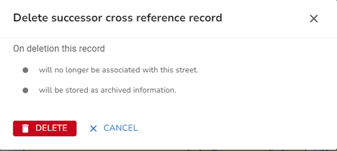

Scotland only
The street successor cross reference provides for historical links between streets in the event of splits and merges. This information is displayed when you click on the Successors tab of the Street form. Click on an entry in the list to display the details.
Note: Multiple successor cross reference records can be held for a single street, e.g. where a street has been split into multiple new streets.
First you need to find the street whose successor you wish to maintain. You can use the Search to search for the street. Once you have found the street, click on it, either in the search results or Explorer to open the Street form where the street details will be displayed.
•Select the Successors tab
Add a Successor cross reference
•Select to Add new Successor from one of the Successor Actions.
•Change the Successor details as required.
•Once you are happy, click OK to validate your entry.
•Now click Save to update the property.
Edit a Successor cross reference
•Select the successor cross reference that you wish to edit.
•Change the Successor details as required.
•When you are happy, click OK to validate your changes.
•Now click Save to update the property.
Delete a Successor cross reference
Delete a single Successor cross reference
•Select the successor cross reference that you wish to delete.
•Select to Delete Successor from one of the Successor Actions.
•You will see a confirmation dialog letting you know what will be deleted if you continue e.g.

Delete multiple Successor cross references
•Select the successor cross references you wish to delete from the list.
•A dialog is displayed showing the number of records you have selected with a delete icon e.g.

•Click the Delete Successor records icon.
•You will see a confirmation dialog letting you know what will be deleted if you continue e.g.
•Click  to delete the successor cross references or click CANCEL to return without deleting.
to delete the successor cross references or click CANCEL to return without deleting.
•Now click Save to update the street.